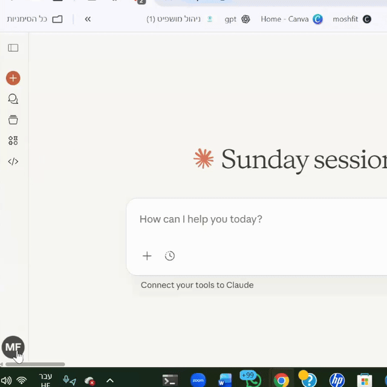

לפני שמתחילים
-
WWindows 10 או 11
-
$מנוי Claude Pro או Team
1
התקנת Node.js
כ-2 דקות
Node.js היא סביבת הריצה שמפעילה את Claude Code. זו תוכנה חינמית שמשמשת מפתחים רבים.
התקנת Node.js בווינדוס

עקבו אחרי השלבים הבאים:
- פתחו את הדפדפן וחפשו "Node js" בגוגל
- לחצו על האתר הרשמי (nodejs.org)
- לחצו על הכפתור הירוק "LTS" להורדה (זו הגרסה היציבה)
- הריצו את הקובץ שהורדתם (שם הקובץ מסתיים ב-.msi)
- לחצו על "Next" באשף ההתקנה
- אשרו את הסכם הרישיון
- השאירו את תיקיית ההתקנה כברירת מחדל
- חשוב: אל תסמנו את האפשרות "Automatically install necessary tools" - השאירו אותה ריקה
- לחצו על "Install" והמתינו לסיום
- לחצו על "Finish"
איך יודעים שזה עבד?
פתחו Command Prompt והקלידו node --version. אם מופיע מספר (כמו v24.12.0), הכל בסדר!
2
התקנת Claude Code
כדקה
עכשיו נתקין את Claude Code עצמו באמצעות פקודה פשוטה ב-Command Prompt.
התקנת Claude Code דרך Command Prompt

עקבו אחרי השלבים הבאים:
- לחצו על תפריט התחל (אייקון החלון)
- הקלידו "cmd" או "Command Prompt"
- לחצו על Command Prompt כדי לפתוח אותו
- העתיקו והדביקו את הפקודה הזו, ולחצו Enter:
npm install -g @anthropic-ai/claude-code
מה הפקודה הזו עושה?
היא אומרת ל-Node.js להוריד ולהתקין את Claude Code מהאינטרנט. ה--g אומר "התקן גלובלית" כדי שתוכלו להשתמש בזה מכל מקום.
3
התקנת Git
כ-3 דקות
Git היא תוכנה חינמית שעוזרת לעקוב אחרי שינויים בקבצים. Claude Code צריך אותה כדי לעבוד כמו שצריך.
הורדה והתקנה של Git

עקבו אחרי השלבים הבאים:
- חפשו "git scm" בגוגל
- היכנסו לאתר הרשמי של Git (git-scm.com)
- לחצו על "Download for Windows"
- בחרו ב-"64-bit Git for Windows Setup" (Standalone Installer)
- הריצו את קובץ ההתקנה שהורדתם
- לחצו על "Next" ברוב האפשרויות (ברירות המחדל מצוינות)
אל תדאגו מהאפשרויות!
למתקין של Git יש הרבה מסכים עם אפשרויות טכניות. פשוט לחצו "Next" והשאירו את ברירות המחדל - הן עובדות מצוין עם Claude Code.
סיכום מהיר של אפשרויות Git (פשוט לחצו Next):
- עורך: Vim (ברירת מחדל) - זה בסדר
- ענף ברירת מחדל: תנו ל-Git להחליט
- סביבת PATH: "Git from command line and 3rd-party software" (מומלץ)
- SSH: השתמשו ב-OpenSSH המובנה
- HTTPS: השתמשו ב-Windows Secure Channel
- סיומי שורות: Checkout Windows-style, commit Unix-style
- טרמינל: השתמשו ב-MinTTY
- לבסוף, לחצו על "Install"
4
הגדרה והתחברות
כ-3 דקות
הגיע הזמן להפעיל את Claude Code ולחבר אותו לחשבון Claude שלכם. כאן מתחיל הקסם!
הפעלת Claude Code והתחברות

עקבו אחרי השלבים הבאים:
- צרו תיקייה חדשה לפרויקט (למשל, קליק ימני על שולחן העבודה ← חדש ← תיקייה ← קראו לה "test")
- פתחו את PowerShell או Command Prompt
- נווטו לתיקייה שלכם על ידי הקלדת
cd Desktop\test(או הנתיב לתיקייה שלכם) - הקלידו claude ולחצו Enter
- השתמשו בחיצים כדי לבחור ערכת נושא (כמו Dark mode) ולחצו Enter
- בחרו ב-"Claude account with subscription"
- ייפתח חלון דפדפן - התחברו לחשבון Claude שלכם
- לחצו על "Authorize" כדי לחבר את Claude Code
- תראו "You're all set up" - אפשר לסגור את הדפדפן
- חזרו לטרמינל, קראו את אפשרויות הפרטיות ולחצו Enter לאישור
צריכים מנוי?
אתם צריכים מנוי Claude Pro או Team. אם אין לכם, הדפדפן יציע לכם לשדרג. המנויים מתחילים מ-$20 לחודש.
5
הגדרות פרטיות אופציונלי
כדקה
כברירת מחדל, השיחות שלכם עשויות לשמש לשיפור Claude. אם אתם מעדיפים יותר פרטיות, אפשר לשנות את ההגדרה הזו.
ניהול הגדרות פרטיות

כדי לבטל שימוש בנתונים לאימון:
- פתחו את הדפדפן וגלשו ל-claude.ai
- לחצו על אייקון הפרופיל שלכם בפינה העליונה
- לחצו על "Settings"
- עברו ללשונית "Privacy"
- כבו את האפשרות "Help improve Claude"
מה זה אומר?
כש-"Help improve Claude" מופעל, השיחות שלכם עשויות להיבדק על ידי Anthropic כדי לשפר את Claude. כיבוי האפשרות אומר שהנתונים שלכם נשארים פרטיים ולא ישמשו לאימון.